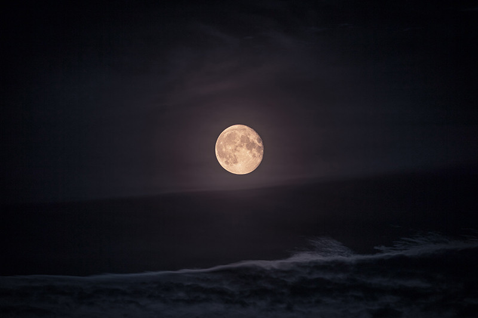
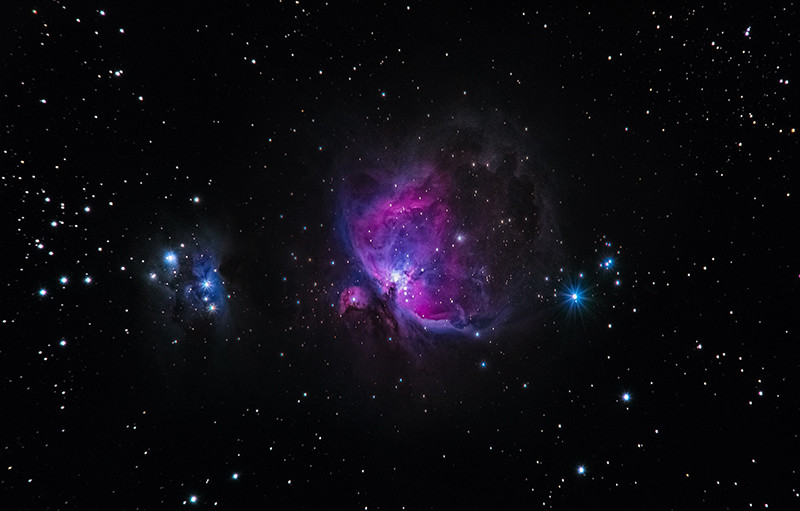

Солнечная система — наиболее изученная часть космического пространства. По официальной версии, она включает восемь планет. В действительности их значительно больше. Одних только «карликов» здесь насчитывается не меньше пяти. Это Плутон, Церера, Хаумеа, Макемаке и Эрида. Из-за удаленности от Земли они мало изучены. Более того, по оценкам ученых, в Солнечной системе может находиться еще около 2 тыс. потенциальных карликовых планет. К тому же многие астрофизики признают наличие девятой крупной планеты. Она размером с Нептун и в десять раз тяжелее Земли. О существовании загадочной планеты X ученые стали догадываться еще в 2014 году, а в 2016-м получили первые доказательства с помощью компьютерного моделирования.
Еще одну таинственную планету астрономы обнаружили в созвездии Рака. По мнению сотрудников Йельского университета, она вдвое больше и в восемь раз тяжелее Земли. Но главное — Янссен почти целиком состоит из графита и алмазов. Причем на долю последних приходится треть его вещества. Forbes оценил стоимость планеты в $26,9 нониллионов. По космическим меркам, гигантский алмаз расположен неподалеку от землян — всего в 40 световых годах. Правда, температура его поверхности достигает 2,148 тыс. градусов. А скорость вращения настолько высокая, что один год там равняется 18 земным часам. Кроме того, недавно ученые выяснили, что одна сторона Янссена находится в расплавленном состоянии и представляет собой углеродную лаву.
Если спутник Земли исчезнет, скорее всего, глобальной катастрофы не случится. Когда-то она была основным источником света в темное время суток — теперь люди умеют обходиться без нее. И все же некоторые серьезные изменения произойдут. Например, настанет конец многим водным видам спорта. Фазы Луны влияют на волны — проходя над поверхностью нашей планеты, она «тянет» за собой массы воды. Кроме того, вымрут морские обитатели, жизнь которых напрямую связана с приливами и отливами. Без спутника на Земле не будет солнечных и лунных затмений, а тектонические плиты сместятся, вызвав землетрясения и извержения вулканов. Но главное — климат планеты уже не будет прежним.
Самый таинственный космический пришелец XX века — Тунгусский метеорит. Он упал в районе сибирской реки Тунгуска утром 30 июня 1908 года. В тот день небо осветило ярким сиянием, а последовавший за ним воздушный взрыв уничтожил огромный участок леса и выбил стекла домов в радиусе 200 км. Однако ни осколков метеорита, ни следов применения оружия массового поражения, ни обломков инопланетного корабля так никто и не нашел. По расчетам специалистов NASA, диаметр метеорита составлял 75 м, а сила взрыва сравнялась с мощностью термоядерной бомбы. К слову, после падения Челябинского метеорита ученые нашли более 100 осколков. Самый большой из них весит почти 700 кг.
Самым тихим местом на нашей планете считается безэховая камера в Лаборатории Орфилда — она поглощает до 99,99% звуков. Но даже там услышать абсолютную тишину не получится. Ее нарушит работа наших легких и кровеносной системы. Сегодня в этой лаборатории проводят различные исследования и тестируют приборы. А еще в подобных изолированных пространствах специалисты NASA испытывают будущих астронавтов. В космосе нет звуков — из-за отсутствия воздуха. Поэтому даже мощные галактические взрывы происходят в полной тишине. Работать в таких условиях очень трудно: всего несколько минут в звуковом вакууме вызывают у неподготовленных людей панические атаки и сильные слуховые галлюцинации.
Космическому агентству не хватает скафандров. Из-за этого даже отменили первый выход в открытый космос команды женщин-космонавтов. Он был перенесен и состоялся в октябре 2019 года. В разработку новых скафандров NASA вложило более $200 млн. Несмотря на это, согласно отчету генерального инспектора Пола Мартина, в распоряжении ведомства находится всего 11 пригодных для эксплуатации космических костюмов. Они разработаны в конце семидесятых годов, а срок их службы истек еще в прошлом столетии. Из-за неполадок в устаревшей охлаждающей системе скафандров в шлемах астронавтов скапливается влага. По словам инженера NASA Пабло де Леона, каждый такой костюм весит более 150 кг и стоит $22 млн.

Луна постепенно удаляется от нашей планеты. Правда, происходит это с очень незначительной скоростью — 38 мм в год. Исследователи из Висконсинского университета в Мэдисоне и Колумбийского университета рассчитали, что 1,5 млрд лет назад земные сутки длились примерно 18 часов. В то время Луна находилась к Земле на 44 тыс. км ближе, чем теперь. По мнению астрофизиков, возросшее расстояние повлияло на вращение планеты вокруг своей оси, а вместе с тем на климат и продолжительность дня. Еще через несколько миллиардов лет орбита Луны увеличится примерно вдвое, а сутки растянутся на 870 часов. Однако со временем они перестанут отдаляться друг от друга, и спутник вновь начнет двигаться к Земле, прогнозируют специалисты.
Из-за гравитации время в космосе протекает по-разному. Чем мощнее гравитационное поле, тем сильнее замедляется время. Этот феномен проиллюстрирован в фильме «Интерстеллар» Кристофера Нолана. Когда герои попадают на планету Миллер, час для них оказывается равен семи земным годам. Вернувшись на борт космического корабля спустя три с небольшим часа, астронавты застают уже поседевшего коллегу, который ждал их возвращения долгие 23 года. Практически так же происходит и в реальности. Например, для космонавтов время тянется на доли секунды быстрее, чем для людей на Земле. А вблизи черной дыры оно почти полностью останавливается.

Венера схожа с Землей по составу и размерам, но сильно отличается по внешнему виду и условиям на поверхности. Атмосфера планеты состоит из нагретых до больших температур углекислого газа и паров серной кислоты и обладает очень высокой плотностью. Данные спектрометра SPICAV, установленного на орбитальной станции Venus Express, показали, что в мезосфере Венеры на высоте 85-100 км озона в 10 тысяч раз меньше, чем в атмосфере Земли. А содержание двуокиси серы значительно меняется в течение нескольких суток. Благодаря исследованию с использованием звездного просвечивания, когда спектрометр следил за звездами при их восходе и заходе за горизонт планеты, ученым удалось выяснить концентрацию основного газа венерианской атмосферы. Такое распределение озона указывает, что газ взаимодействует с химическими соединениями, которые ветры переносят из дневной стороны полушария на ночную. А из-за того, что атмосфера Венеры вращается в 60 раз быстрее поверхности планеты, скорость ветра здесь может составлять до 500 км/ч.